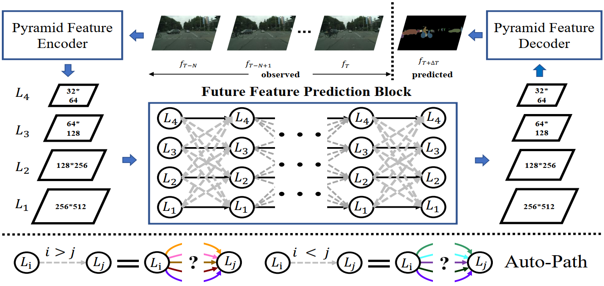
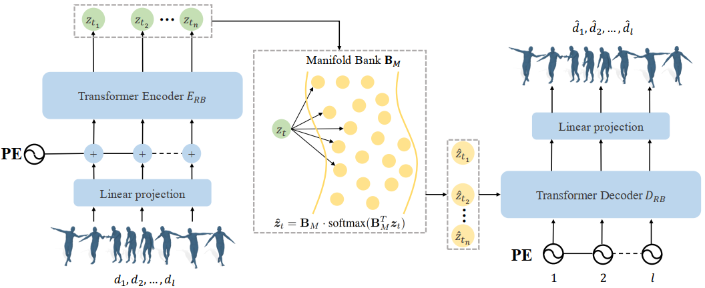
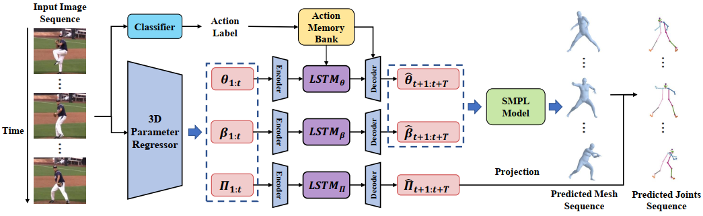
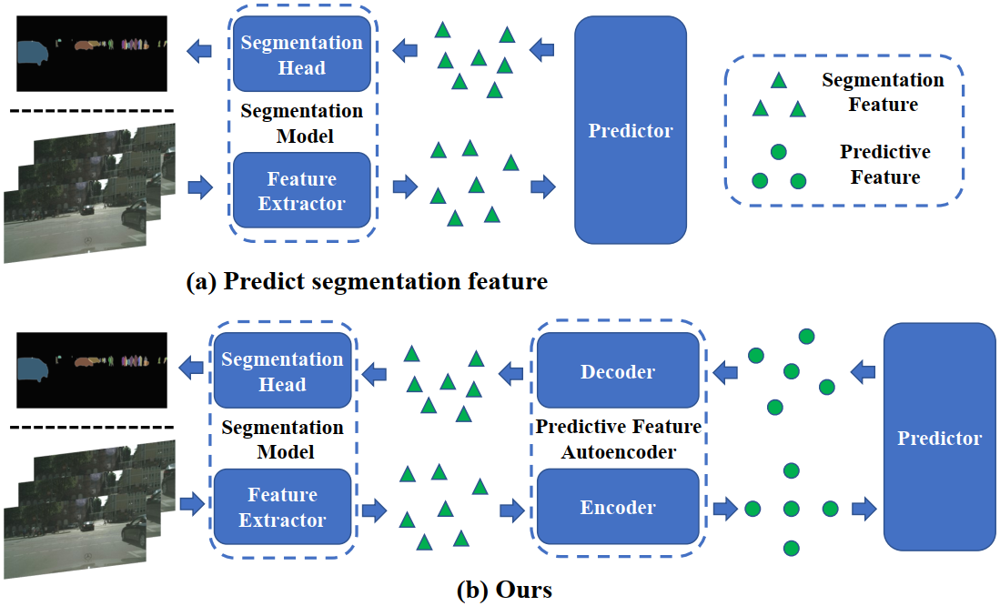
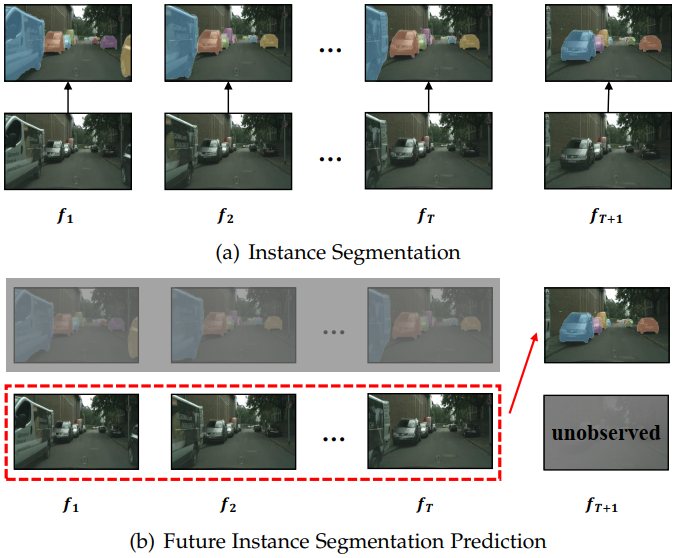

Mater of Engineering, |
I have graduated from Sun Yat-sen University and obtained my master's degree in 2023, where I was supervised by Professor Wei-Shi Zheng & Associate Professor Jian-Fang Hu. Before that, I obtained my bachelor's degree in Computer Science and Technology from Sun Yat-sen University in 2020. I am looking for a Ph.D. position.
I was fortunate to work as a research intern at Microsoft Research Asia advised by Dr. Chunyu Wang and at Huya Inc advised by Dr. Xintong Han. Besides, I was lucky to have worked closely with Prof. Wenjun Zeng and Prof. Jianguo Zhang.
My research interests lie in Computer Vision and Machine Learning. I am very interested in developing perceptual systems and decision-making systems. Currently, my focus is on autonomous driving system, instance segmentation prediction and 3D human motion prediction.
M.E. in Computer Science and Technology • Sep. 2020 - Jun. 2023
Intelligence Science and System Lab
B.E. in Computer Science and Technology • Sep. 2016 - Jun. 2020
GPA: 3.9/4.0
Sun Yat-Sen University
Undergraduate Researcher & Graduate Researcher • Aug. 2018 - Jun. 2023
Adviser: Professor Wei-Shi Zheng & Associate Professor Jian-Fang Hu
Microsoft Research Asia
Research Intern • Aug. 2021 - Jan. 2022
Adviser: Dr. Chunyu Wang
Huya Inc
Research Intern • Jul. 2020 - Jul. 2021
Adviser: Dr. Xintong Han
|  |
APANet: Auto-Path Aggregation for Future Instance Segmentation Prediction
|
|  |
You Never Stop Dancing: Non-freezing Dance Generation via Bank-constrained Manifold Projection |
|  |
Action-guided 3D Human Motion Prediction |
|  |
Predictive feature learning for future segmentation prediction |
|  |
Predicting future instance segmentation with contextual pyramid convlstms |